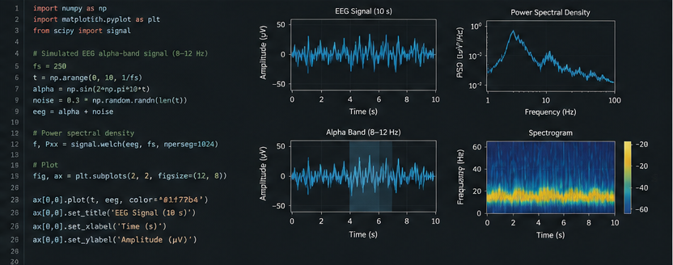

What information does a signal contain?
Explore how a physiological measurement can be transformed from an apparently complex signal into interpretable variables.
Data and Brain Health
A growing collection of small experiments in data analysis, visualisation and signal processing applied to questions related to cognition, neuroscience and brain health.

01
This project brings together small experiments designed to explore how data can be used to better understand different aspects of brain health.
The initial aim is not to build large predictive models, but to progressively understand the data themselves: how they are obtained, how they are represented, what information they contain and where their limitations lie.
As my Biomedical Engineering training develops, the project will incorporate increasingly advanced techniques in signal processing, statistics, programming and computational modelling.
02
Neuropsychological practice continuously generates information: cognitive scores, clinical observations, longitudinal change and data about everyday functioning.
Biomedical Engineering expands this space by incorporating additional sources of information such as physiological signals, sensors, neuroimaging and digital data.
I am especially interested in understanding how these different sources of data can be related without losing the clinical context needed to interpret them.
03
Explore how a physiological measurement can be transformed from an apparently complex signal into interpretable variables.
Analyse longitudinal data and represent individual trajectories of change.
Investigate ways of visualising cognitive, functional, physiological and contextual information together.
Distinguish visually attractive associations from patterns that have sufficient statistical and scientific support.
04
Scores, response times, errors and other variables obtained from cognitive and neuropsychological tasks.
Data from ECG, EEG, EMG, heart rate and other biomedical acquisition systems.
Repeated measurements that allow changes over time and individual trajectories to be examined.
Future exploration of brain imaging datasets and the tools required to process and visualise them.
Information related to everyday activity, autonomy and functioning in real-world contexts.
05
The methods used in this project will evolve alongside my technical training.
Programming for scientific analysis, data processing and automation of small experiments.
Descriptive and inferential analysis to understand distributions, associations, variability and uncertainty.
Representations designed to make patterns easier to understand without hiding variability or uncertainty.
Progressive exploration of filtering, transformation, feature extraction and biomedical signal analysis.
Gradual development of mathematical and computational models applied to problems related to brain health.
06
This section will grow progressively with small reproducible projects.
Planned
Development of representations showing the evolution of different cognitive domains across repeated assessments.
Planned
Acquisition or use of a biomedical signal to explore its structure, noise, filtering and main characteristics.
Planned
Reproducible analysis of a public dataset related to neuroscience or brain health.
Future
Initial experiments in visualisation and analysis of public brain imaging datasets.
07
Analyses should be understandable, repeatable and open to review.
A complex model is not necessarily better if it becomes impossible to understand what information it is using.
Biomedical data become meaningful when interpreted within a biological and clinical context.
Variability and data limitations should remain visible rather than being hidden behind apparently precise results.
Experiments will use simulated, anonymised or appropriately sourced public datasets. No identifiable patient information will be published.
08
This project will evolve from small analysis and visualisation exercises towards progressively more complex problems.
Future areas include physiological signal analysis, longitudinal data, neuroimaging and computational models applied to brain health.
In the longer term, I am particularly interested in exploring how different information modalities can be integrated to study cognitive and neurological change while maintaining the interpretability of the results.